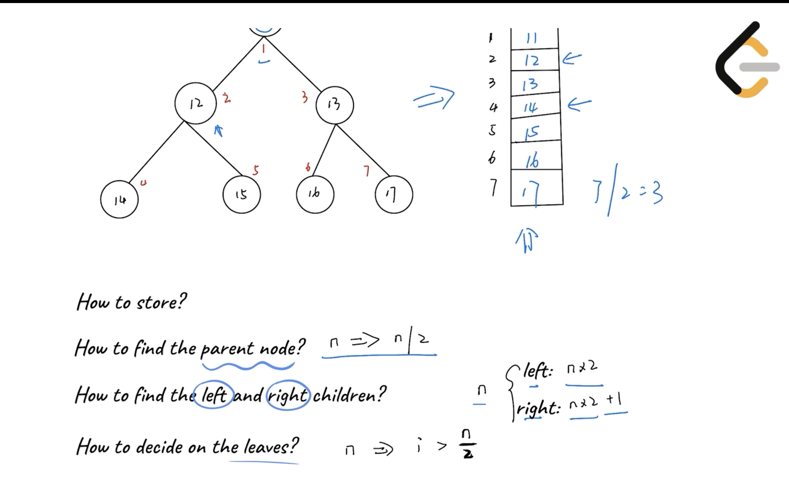
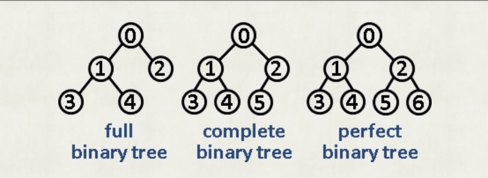
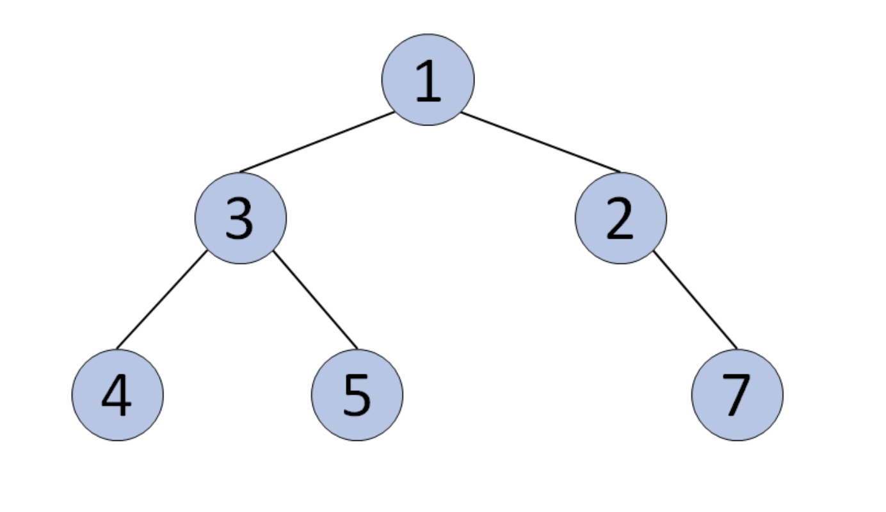

Binary Tree
Last updated: Mar 1, 2026Table of Contents
- Overview
- Key Properties
- References
- Problem Categories
- Pattern 1: Tree Traversal
- Pattern 2: Tree Construction
- Pattern 3: Path Problems
- Pattern 4: Tree Properties
- Pattern 5: LCA & Distance
- Pattern 6: Binary Search on Trees
- Complete Tree to Array Representation
- Templates & Algorithms
- Template Comparison Table
- Universal Tree Template
- Template 1: Tree Traversal (Recursive)
- Template 2: Tree Traversal (Iterative)
- Template 3: Tree Construction
- Template 4: Path Problems
- Template 5: Tree Properties
- Template 6: LCA (Lowest Common Ancestor)
- Template 7: Binary Search on Trees
- Problems by Pattern
- Pattern-Based Problem Classification
- Complete Problem List by Difficulty
- 2) LC Example
- 2-1) Construct Binary Tree from Preorder and Inorder Traversal
- 2-2) Construct Binary Tree from Inorder and Postorder Traversal
- 2-3) Binary Tree Paths
- 2-4) Binary Tree Longest Consecutive Sequence
- 2-5) Binary Search Tree Iterator
- 2-6) Count Complete Tree Nodes (Binary Search on Trees)
- Pattern Selection Strategy
- Decision Framework
- Summary & Quick Reference
- Complexity Quick Reference
- Template Quick Reference
- Common Patterns & Tricks
- Problem-Solving Steps
- Common Mistakes & Tips
- Interview Tips
- Related Topics
- Java Implementation Notes
- Python Implementation Notes
Binary Tree
Overview
Binary Tree is a hierarchical data structure where each node has at most two children (left and right). It forms the foundation for many advanced data structures like BST, Heap, and is crucial for understanding tree-based algorithms.
Key Properties
- Time Complexity:
- Access/Search: O(n) worst case, O(log n) balanced
- Insert/Delete: O(n) worst case, O(log n) balanced
- Space Complexity: O(n) for storing n nodes
- Core Idea: Hierarchical structure with recursive properties
- When to Use: Hierarchical data, searching, sorting, decision making, expression parsing
References
Problem Categories
Pattern 1: Tree Traversal
- Description: Visit all nodes in specific order (preorder, inorder, postorder, level-order)
- Recognition: “Visit all nodes”, “print tree”, “serialize tree”
- Examples: LC 94, LC 144, LC 145, LC 102
- Template: Use Traversal Templates
Pattern 2: Tree Construction
- Description: Build tree from traversal sequences or other representations
- Recognition: “Construct from”, “build tree”, “deserialize”
- Examples: LC 105, LC 106, LC 108, LC 297
- Template: Use Construction Template
Pattern 3: Path Problems
- Description: Find paths with specific properties (sum, length, pattern)
- Recognition: “Path sum”, “root to leaf”, “longest path”
- Examples: LC 112, LC 113, LC 257, LC 124
- Template: Use Path Template with backtracking
Pattern 4: Tree Properties
- Description: Check or calculate tree properties (height, balance, symmetry)
- Recognition: “Height”, “balanced”, “symmetric”, “diameter”
- Examples: LC 104, LC 110, LC 101, LC 543
- Template: Use Property Check Template
Pattern 5: LCA & Distance
- Description: Find common ancestors or calculate distances between nodes
- Recognition: “Lowest common ancestor”, “distance between nodes”
- Examples: LC 236, LC 235, LC 863
- Template: Use LCA Template
Pattern 6: Binary Search on Trees
- Description: Apply binary search technique on tree properties (height, node count, structure)
- Recognition: “O(log n) time”, “complete binary tree”, “count nodes”, “find kth element”
- Examples: LC 222 (Count Complete Tree Nodes), LC 230 (Kth Smallest in BST)
- Template: Use Binary Search + Tree Properties Template
- Key Insight:
- For complete binary trees, can use binary search on tree structure
- Check left/right subtree properties to decide search direction
- Time complexity can be reduced from O(n) to O(log²n)
Complete Tree to Array Representation
- Note if we use an
arrayto represent thecomplete binary tree,andstore the root node at index 1- so, index of the
parentnode of any node is[index of the node / 2] - so, index of the
left childnode is[index of the node * 2] - so, index of the
right childnode is[index of the node * 2 + 1] - https://github.com/yennanliu/CS_basics/blob/master/data_structure/python/MinHeap.py#L36-L40
- video : very good explanation!!!
- properties
- how to store ?
- via Array and index
- how to find the parent node ?
- n / 2
- NOTE :
n is an "index"in array
- how to find the left and right children ?
- left children : n * 2
- right children : n * 2 + 1
- how to check if a node is leaf node ?
- check if i > (# of nodes) / 2
-

- how to store ?
- so, index of the
Example:
Let’s say you have a complete binary tree like this:
10
/ \
15 20
/ \ /
30 40 50
This tree as an array (1-based) would be:
# `n is an "index"` in array
Index: 1 2 3 4 5 6
Value: [10, 15, 20, 30, 40, 50]
Relationships:
-
Node at index 2 (15)
- Parent: 2 / 2 = 1 → 10
- Left child: 2 * 2 = 4 → 30
- Right child: 2 * 2 + 1 = 5 → 40
-
Array to Complete Tree
- dev
-
Complete binary tree- A complete binary tree is a binary tree in which every level,
except possibly the last, is completely filled, and all nodes in the last level are as far left as possible. - wiki
- example :
- complete binary tree

- NOT complete binary tree
- A complete binary tree is a binary tree in which every level,
Templates & Algorithms
Template Comparison Table
| Template Type | Use Case | Approach | Time | Space | When to Use |
|---|---|---|---|---|---|
| Recursive Traversal | Simple traversal | Recursion | O(n) | O(h) | Default choice, clean code |
| Iterative Traversal | Memory limited | Stack/Queue | O(n) | O(h) | Avoid recursion overhead |
| Morris Traversal | Space limited | Threading | O(n) | O(1) | Constant space required |
| Level Order | BFS problems | Queue | O(n) | O(w) | Level-by-level processing |
| Binary Search on Trees | Complete/Balanced tree | Binary Search | O(log²n) | O(log n) | Optimize with tree structure |
Universal Tree Template
def tree_problem(root):
"""
Universal template for most binary tree problems
Can be adapted for traversal, calculation, or modification
"""
# Base case
if not root:
return None # or 0, [], depending on problem
# Pre-order processing (before recursion)
# process_current_node()
# Recursive calls
left_result = tree_problem(root.left)
right_result = tree_problem(root.right)
# Post-order processing (after recursion)
# combine_results()
return result
Template 1: Tree Traversal (Recursive)
# Preorder Traversal
def preorder(root):
if not root:
return []
return [root.val] + preorder(root.left) + preorder(root.right)
# Inorder Traversal
def inorder(root):
if not root:
return []
return inorder(root.left) + [root.val] + inorder(root.right)
# Postorder Traversal
def postorder(root):
if not root:
return []
return postorder(root.left) + postorder(root.right) + [root.val]
Template 2: Tree Traversal (Iterative)
# Iterative Inorder with Stack
def inorder_iterative(root):
result, stack = [], []
current = root
while current or stack:
# Go to leftmost node
while current:
stack.append(current)
current = current.left
# Current must be None, so pop from stack
current = stack.pop()
result.append(current.val)
# Visit right subtree
current = current.right
return result
# Level Order with Queue
def level_order(root):
if not root:
return []
result = []
queue = collections.deque([root])
while queue:
level_size = len(queue)
current_level = []
for _ in range(level_size):
node = queue.popleft()
current_level.append(node.val)
if node.left:
queue.append(node.left)
if node.right:
queue.append(node.right)
result.append(current_level)
return result
Template 3: Tree Construction
def build_tree_from_traversals(preorder, inorder):
"""
Construct tree from preorder and inorder traversals
Key insight: First element in preorder is always root
"""
if not preorder or not inorder:
return None
# Root is first element in preorder
root = TreeNode(preorder[0])
# Find root position in inorder to split left/right
root_idx = inorder.index(root.val)
# Recursively build subtrees
# Left subtree: elements before root in inorder
root.left = build_tree_from_traversals(
preorder[1:root_idx+1], # Skip root, take left elements
inorder[:root_idx] # Everything before root
)
# Right subtree: elements after root in inorder
root.right = build_tree_from_traversals(
preorder[root_idx+1:], # Everything after left subtree
inorder[root_idx+1:] # Everything after root
)
return root
Template 4: Path Problems
def path_sum_template(root, target):
"""
Template for path sum problems
Can track paths, sums, or other properties
"""
def dfs(node, current_sum, path):
if not node:
return
# Update current state
current_sum += node.val
path.append(node.val)
# Check if leaf node and condition met
if not node.left and not node.right:
if current_sum == target:
result.append(path[:]) # Copy current path
# Explore subtrees
dfs(node.left, current_sum, path)
dfs(node.right, current_sum, path)
# Backtrack
"""
NOTE !!! why do we need backtrack here ? (gemini)
In simple terms, **backtracking** is the "undo" button for your recursion.
### 3. A Visual Example
Imagine this tree:
```text
1
/ \
2 3
```
**Without `path.pop()`:**
1. Go to `1`: `path = [1]`
2. Go to `2`: `path = [1, 2]`
3. Finish `2`, go back to `1`.
4. Go to `3`: `path = [1, 2, 3]` <-- **ERROR!** (2 shouldn't be here)
**With `path.pop()`:**
1. Go to `1`: `path = [1]`
2. Go to `2`: `path = [1, 2]`
3. Finish `2`, **`pop()`**: `path = [1]`
4. Go to `3`: `path = [1, 3]` <-- **CORRECT!**
"""
path.pop()
result = []
dfs(root, 0, [])
return result
Template 5: Tree Properties
def tree_property_template(root):
"""
Calculate tree properties (height, diameter, balance)
"""
def helper(node):
if not node:
return 0 # or (0, True) for multiple values
# Get info from subtrees
left_info = helper(node.left)
right_info = helper(node.right)
# Calculate current node's property
current_property = calculate(left_info, right_info)
# Update global result if needed
self.result = max(self.result, current_property)
return current_property
self.result = 0
helper(root)
return self.result
Template 6: LCA (Lowest Common Ancestor)
def find_lca(root, p, q):
"""
Find lowest common ancestor of nodes p and q
"""
if not root or root == p or root == q:
return root
left = find_lca(root.left, p, q)
right = find_lca(root.right, p, q)
# Both found in different subtrees -> current is LCA
if left and right:
return root
# One or both found in same subtree
return left if left else right
Template 7: Binary Search on Trees
def count_complete_tree_nodes(root):
"""
Count nodes in complete binary tree in O(log²n) time
Key: Use binary search on tree structure
"""
if not root:
return 0
def get_height(node):
"""Get height by going left"""
height = 0
while node:
height += 1
node = node.left
return height
left_height = get_height(root.left)
right_height = get_height(root.right)
if left_height == right_height:
# Left subtree is perfect binary tree
# Nodes in left = 2^left_height - 1
# Plus root = 2^left_height
return (1 << left_height) + count_complete_tree_nodes(root.right)
else:
# Right subtree is perfect binary tree
# Height = right_height, nodes = 2^right_height - 1
# Plus root = 2^right_height
return (1 << right_height) + count_complete_tree_nodes(root.left)
Problems by Pattern
Pattern-Based Problem Classification
Pattern 1: Tree Traversal Problems
| Problem | LC # | Difficulty | Key Technique | Template |
|---|---|---|---|---|
| Binary Tree Inorder Traversal | 94 | Easy | Stack/Recursion | Template 1/2 |
| Binary Tree Preorder Traversal | 144 | Easy | Stack/Recursion | Template 1/2 |
| Binary Tree Postorder Traversal | 145 | Easy | Stack/Recursion | Template 1/2 |
| Binary Tree Level Order Traversal | 102 | Medium | BFS with Queue | Template 2 |
| Binary Tree Zigzag Level Order | 103 | Medium | BFS + Direction | Template 2 |
| Binary Tree Right Side View | 199 | Medium | Level Order/DFS | Template 2 |
| Binary Tree Vertical Order | 314 | Medium | BFS + HashMap | Template 2 |
| Find Bottom Left Tree Value | 513 | Medium | Level Order | Template 2 |
Pattern 2: Tree Construction Problems
| Problem | LC # | Difficulty | Key Technique | Template |
|---|---|---|---|---|
| Construct from Preorder & Inorder | 105 | Medium | Index mapping | Template 3 |
| Construct from Inorder & Postorder | 106 | Medium | Index mapping | Template 3 |
| Construct from Preorder & Postorder | 889 | Medium | Recursion | Template 3 |
| Convert Sorted Array to BST | 108 | Easy | Binary Search | Template 3 |
| Serialize and Deserialize Tree | 297 | Hard | BFS/DFS | Template 3 |
| Construct from String | 536 | Medium | Stack/Recursion | Template 3 |
Pattern 3: Path Problems
| Problem | LC # | Difficulty | Key Technique | Template |
|---|---|---|---|---|
| Path Sum | 112 | Easy | DFS | Template 4 |
| Path Sum II | 113 | Medium | DFS + Backtrack | Template 4 |
| Binary Tree Paths | 257 | Easy | DFS + Path Track | Template 4 |
| Sum Root to Leaf Numbers | 129 | Medium | DFS | Template 4 |
| Binary Tree Maximum Path Sum | 124 | Hard | DFS + Global Max | Template 4 |
| Longest Consecutive Sequence | 298 | Medium | DFS + Counter | Template 4 |
| Path Sum III | 437 | Medium | Prefix Sum | Template 4 |
Pattern 4: Tree Properties Problems
| Problem | LC # | Difficulty | Key Technique | Template |
|---|---|---|---|---|
| Maximum Depth | 104 | Easy | DFS/BFS | Template 5 |
| Minimum Depth | 111 | Easy | DFS/BFS | Template 5 |
| Balanced Binary Tree | 110 | Easy | Height Check | Template 5 |
| Diameter of Binary Tree | 543 | Easy | DFS + Max | Template 5 |
| Symmetric Tree | 101 | Easy | Mirror Check | Template 5 |
| Same Tree | 100 | Easy | Simultaneous DFS | Template 5 |
Pattern 5: LCA & Distance Problems
| Problem | LC # | Difficulty | Key Technique | Template |
|---|---|---|---|---|
| Lowest Common Ancestor | 236 | Medium | DFS | Template 6 |
| LCA of BST | 235 | Easy | BST Property | Template 6 |
| Distance K from Target | 863 | Medium | Graph Convert | Template 6 |
| LCA of Deepest Leaves | 1123 | Medium | DFS + Depth | Template 6 |
Pattern 6: Binary Search on Trees Problems
| Problem | LC # | Difficulty | Key Technique | Template |
|---|---|---|---|---|
| Count Complete Tree Nodes | 222 | Medium | Binary Search on Height | Template 7 |
| Kth Smallest in BST | 230 | Medium | Inorder + Binary Search | Template 7 |
| Closest BST Value | 270 | Easy | Binary Search on BST | Template 7 |
| Closest BST Value II | 272 | Hard | Inorder + Two Pointers | Template 7 |
Complete Problem List by Difficulty
Easy Problems (Foundation)
- LC 94: Binary Tree Inorder Traversal - Basic traversal
- LC 100: Same Tree - Tree comparison
- LC 101: Symmetric Tree - Mirror property check
- LC 104: Maximum Depth - Basic recursion
- LC 108: Convert Sorted Array to BST - Array to tree
- LC 110: Balanced Binary Tree - Height calculation
- LC 111: Minimum Depth - BFS for shortest path
- LC 112: Path Sum - Simple path tracking
- LC 144: Binary Tree Preorder Traversal - Stack usage
- LC 145: Binary Tree Postorder Traversal - Stack manipulation
- LC 226: Invert Binary Tree - Tree modification
- LC 235: LCA of BST - BST properties
- LC 257: Binary Tree Paths - Path collection
- LC 543: Diameter of Binary Tree - Global max pattern
- LC 572: Subtree of Another Tree - Tree matching
Medium Problems (Core)
- LC 102: Binary Tree Level Order Traversal - BFS foundation
- LC 103: Binary Tree Zigzag Level Order - Level with direction
- LC 105: Construct from Preorder & Inorder - Index mapping
- LC 106: Construct from Inorder & Postorder - Array slicing
- LC 113: Path Sum II - Backtracking paths
- LC 114: Flatten Binary Tree - In-place modification
- LC 116: Populating Next Right Pointers - Level connection
- LC 129: Sum Root to Leaf Numbers - Number construction
- LC 173: Binary Search Tree Iterator - Iterator design
- LC 199: Binary Tree Right Side View - Level last element
- LC 222: Count Complete Tree Nodes - Binary search on tree
- LC 230: Kth Smallest in BST - Inorder property
- LC 236: Lowest Common Ancestor - Classic LCA
- LC 298: Binary Tree Longest Consecutive - Path tracking
- LC 314: Binary Tree Vertical Order - Column indexing
- LC 437: Path Sum III - Prefix sum on tree
- LC 513: Find Bottom Left Tree Value - Level order variant
- LC 536: Construct from String - Parsing to tree
- LC 654: Maximum Binary Tree - Monotonic stack
- LC 863: All Nodes Distance K - Graph conversion
Hard Problems (Advanced)
- LC 124: Binary Tree Maximum Path Sum - Global optimization
- LC 297: Serialize and Deserialize - String to tree
- LC 834: Sum of Distances in Tree - Rerooting technique
- LC 968: Binary Tree Cameras - Greedy on tree
2) LC Example
2-1) Construct Binary Tree from Preorder and Inorder Traversal
# python
# LC 105. Construct Binary Tree from Preorder and Inorder Traversal
# V0
# IDEA : BST property
class Solution(object):
def buildTree(self, preorder, inorder):
if len(preorder) == 0:
return None
if len(preorder) == 1:
return TreeNode(preorder[0])
### NOTE : init root like below (via TreeNode and root value (preorder[0]))
root = TreeNode(preorder[0])
"""
NOTE !!!
-> # we get index of root.val from "INORDER" to SPLIT TREE
"""
index = inorder.index(root.val) # the index of root at inorder, and we can also get the length of left-sub-tree, right-sub-tree ( preorder[1:index+1]) for following using
# recursion for root.left
#### NOTE : the idx is from "INORDER"
#### NOTE : WE idx from inorder in preorder as well
#### NOTE : preorder[1 : index + 1] (for left sub tree)
root.left = self.buildTree(preorder[1 : index + 1], inorder[ : index]) ### since the BST is symmery so the length of left-sub-tree is same in both Preorder and Inorder, so we can use the index to get the left-sub-tree of Preorder as well
# recursion for root.right
root.right = self.buildTree(preorder[index + 1 : ], inorder[index + 1 :]) ### since the BST is symmery so the length of left-sub-tree is same in both Preorder and Inorder, so we can use the index to get the right-sub-tree of Preorder as well
return root
2-2) Construct Binary Tree from Inorder and Postorder Traversal
# python
# LC 106 Construct Binary Tree from Inorder and Postorder Traversal
# V0
# IDEA : Binary Tree property, same as LC 105
class Solution(object):
def buildTree(self, inorder, postorder):
if not inorder:
return None
if len(inorder) == 1:
return TreeNode(inorder[0])
### NOTE : we get root from postorder
root = TreeNode(postorder[-1])
"""
### NOTE : the index is from inorder
### NOTE : we get index of root in inorder
# -> and this idx CAN BE USED IN BOTH inorder, postorder (Binary Tree property)
"""
idx = inorder.index(root.val)
### NOTE : inorder[:idx], postorder[:idx]
root.left = self.buildTree(inorder[:idx], postorder[:idx])
### NOTE : postorder[idx:-1]
root.right = self.buildTree(inorder[idx+1:], postorder[idx:-1])
return root
2-3) Binary Tree Paths
# LC 257 Binary Tree Paths
# V0
# IDEA : BFS
class Solution:
def binaryTreePaths(self, root):
res = []
### NOTE : we set q like this : [[root, cur]]
cur = ""
q = [[root, cur]]
while q:
for i in range(len(q)):
node, cur = q.pop(0)
### NOTE : if node exist, but no sub tree (i.e. not root.left and not root.right)
# -> append cur to result
if node:
if not node.left and not node.right:
res.append(cur + str(node.val))
### NOTE : we keep cur to left sub tree
if node.left:
q.append((node.left, cur + str(node.val) + '->'))
### NOTE : we keep cur to left sub tree
if node.right:
q.append((node.right, cur + str(node.val) + '->'))
return res
# V0'
# IDEA : DFS
class Solution:
def binaryTreePaths(self, root):
ans = []
def dfs(r, tmp):
if r.left:
dfs(r.left, tmp + [str(r.left.val)])
if r.right:
dfs(r.right, tmp + [str(r.right.val)])
if not r.left and not r.right:
ans.append('->'.join(tmp))
if not root:
return []
dfs(root, [str(root.val)])
return ans
2-4) Binary Tree Longest Consecutive Sequence
# LC 298 Binary Tree Longest Consecutive Sequence
# V0
# IDEA : DFS
class Solution(object):
def longestConsecutive(self, root):
if not root:
return 0
self.result = 0
self.helper(root, 1)
return self.result
def helper(self, root, curLen):
self.result = curLen if curLen > self.result else self.result
if root.left:
if root.left.val == root.val + 1:
self.helper(root.left, curLen + 1)
else:
self.helper(root.left, 1)
if root.right:
if root.right.val == root.val + 1:
self.helper(root.right, curLen + 1)
else:
self.helper(root.right, 1)
# V0'
# IDEA : BFS
class Solution(object):
def longestConsecutive(self, root):
if root is None:
return 0
stack = list()
stack.append((root, 1))
maxLen = 1
while len(stack) > 0:
node, pathLen = stack.pop()
if node.left is not None:
if node.val + 1 == node.left.val:
stack.append((node.left, pathLen + 1))
maxLen = max(maxLen, pathLen + 1)
else:
stack.append((node.left, 1))
if node.right is not None:
if node.val + 1 == node.right.val:
stack.append((node.right, pathLen + 1))
maxLen = max(maxLen, pathLen + 1)
else:
stack.append((node.right, 1))
return maxLen
2-5) Binary Search Tree Iterator
# LC 173. Binary Search Tree Iterator
# V0
# IDEA : STACK + tree
class BSTIterator(object):
def __init__(self, root):
"""
:type root: TreeNode
"""
self.stack = []
self.inOrder(root)
def inOrder(self, root):
if not root:
return
self.inOrder(root.right)
self.stack.append(root.val)
self.inOrder(root.left)
def hasNext(self):
"""
:rtype: bool
"""
return len(self.stack) > 0
def next(self):
"""
:rtype: int
"""
return self.stack.pop()
2-6) Count Complete Tree Nodes (Binary Search on Trees)
// LC 222. Count Complete Tree Nodes
// Java Implementation
// V0 - BFS Approach
// IDEA: Level-order traversal to count all nodes
/**
* time = O(N)
* space = O(N)
*/
public int countNodes_BFS(TreeNode root) {
if (root == null) {
return 0;
}
List<TreeNode> collected = new ArrayList<>();
Queue<TreeNode> q = new LinkedList<>();
q.add(root);
while (!q.isEmpty()) {
TreeNode cur = q.poll();
collected.add(cur);
if (cur.left != null) {
q.add(cur.left);
}
if (cur.right != null) {
q.add(cur.right);
}
}
return collected.size();
}
// V1 - DFS Approach
// IDEA: Recursively count nodes in left and right subtrees
/**
* time = O(N)
* space = O(log N)
*/
public int countNodes_DFS(TreeNode root) {
if (root == null) {
return 0;
}
// Recursively count the nodes in the left subtree
int leftCount = countNodes_DFS(root.left);
// Recursively count the nodes in the right subtree
int rightCount = countNodes_DFS(root.right);
// Return the total count (current node + left subtree + right subtree)
return 1 + leftCount + rightCount;
}
// V2 - Optimized Binary Search Approach for Complete Binary Tree
// IDEA: Use complete tree property + binary search on height
/**
* time = O(log²N)
* space = O(log N)
*
* Key Insight:
* - In a complete binary tree, at least one subtree is a perfect binary tree
* - For perfect binary tree with height h: nodes = 2^h - 1
* - Check left and right subtree heights to determine which is perfect
*/
public int countNodes_Optimized(TreeNode root) {
if (root == null) {
return 0;
}
int leftHeight = getHeight(root.left);
int rightHeight = getHeight(root.right);
if (leftHeight == rightHeight) {
// Left subtree is perfect binary tree
// Nodes in left = 2^leftHeight - 1, plus root = 2^leftHeight
return (1 << leftHeight) + countNodes_Optimized(root.right);
} else {
// Right subtree is perfect binary tree
// Height = rightHeight, nodes = 2^rightHeight - 1, plus root = 2^rightHeight
return (1 << rightHeight) + countNodes_Optimized(root.left);
}
}
/**
* Helper: Get height by traversing left path only
* Works because in complete tree, leftmost path gives height
*/
private int getHeight(TreeNode node) {
int height = 0;
while (node != null) {
height++;
node = node.left;
}
return height;
}
Pattern Selection Strategy
Problem Analysis Flowchart:
1. Does the problem require visiting nodes in specific order?
├── YES → Use Traversal Templates (1 or 2)
│ ├── Need all nodes level by level? → Level Order (Template 2)
│ ├── Need specific order (pre/in/post)? → Template 1
│ └── Need iterative approach? → Template 2
└── NO → Continue to 2
2. Does the problem involve building/modifying tree structure?
├── YES → Use Construction Template (3)
│ ├── From traversal sequences? → Template 3
│ ├── From array/string? → Template 3 variant
│ └── Serialize/Deserialize? → Custom Template 3
└── NO → Continue to 3
3. Does the problem involve paths from root to leaves?
├── YES → Use Path Template (4)
│ ├── Need all paths? → Template 4 with result collection
│ ├── Need path sum? → Template 4 with sum tracking
│ └── Need max/min path? → Template 4 with optimization
└── NO → Continue to 4
4. Does the problem ask for tree properties?
├── YES → Use Property Template (5)
│ ├── Height/Depth? → Template 5 basic
│ ├── Balance/Symmetry? → Template 5 with comparison
│ └── Diameter/Width? → Template 5 with global max
└── NO → Continue to 5
5. Does the problem involve finding ancestors or distances?
├── YES → Use LCA Template (6)
│ ├── Common ancestor? → Template 6
│ └── Distance between nodes? → Template 6 + path tracking
└── NO → Continue to 6
6. Does the problem require O(log n) time or involve complete/balanced tree optimization?
├── YES → Use Binary Search on Trees Template (7)
│ ├── Complete binary tree? → Template 7 with height optimization
│ ├── BST with kth element? → Template 7 with inorder traversal
│ └── Need log time complexity? → Template 7 with binary search
└── NO → Use Universal Template or reconsider problem type
Decision Framework
- Identify pattern: Look for keywords (traversal, path, construct, property, ancestor)
- Choose template: Match problem requirements to template capabilities
- Adapt solution: Modify template for specific constraints
- Optimize: Consider iterative vs recursive, space vs time tradeoffs
Summary & Quick Reference
Complexity Quick Reference
| Operation | Time | Space | Notes |
|---|---|---|---|
| Traversal (any order) | O(n) | O(h) | h = height, O(log n) balanced |
| Level Order | O(n) | O(w) | w = max width |
| Construction | O(n) | O(n) | Building entire tree |
| Path Finding | O(n) | O(h) | May need O(n) for all paths |
| Property Check | O(n) | O(h) | Single pass usually sufficient |
| LCA | O(n) | O(h) | Can optimize to O(log n) for BST |
| Binary Search on Trees | O(log²n) | O(log n) | For complete/balanced trees |
| Serialize/Deserialize | O(n) | O(n) | String representation |
Template Quick Reference
| Template | Best For | Avoid When | Key Code Pattern |
|---|---|---|---|
| Universal | General recursion | Need iterative | if not root: return |
| Traversal Recursive | Clean code | Stack overflow risk | Order determines position |
| Traversal Iterative | Large trees | Simple recursion works | Stack/Queue manipulation |
| Construction | Building trees | Modifying existing | Index mapping crucial |
| Path | Root-to-leaf | Any path in tree | Backtracking pattern |
| Property | Tree metrics | Path problems | Bottom-up calculation |
| LCA | Common ancestors | Simple traversal | Return early pattern |
| Binary Search on Trees | Complete/Balanced trees | General trees | Height comparison + recursion |
Common Patterns & Tricks
Pattern: Global Variable for Optimization
class Solution:
def maxPathSum(self, root):
self.max_sum = float('-inf')
def helper(node):
if not node:
return 0
left = max(0, helper(node.left))
right = max(0, helper(node.right))
self.max_sum = max(self.max_sum, left + right + node.val)
return max(left, right) + node.val
helper(root)
return self.max_sum
Pattern: Level Processing with Delimiter
def rightSideView(root):
if not root:
return []
result, queue = [], [root, None]
while queue:
node = queue.pop(0)
if node:
if queue[0] is None: # Last node in level
result.append(node.val)
if node.left:
queue.append(node.left)
if node.right:
queue.append(node.right)
elif queue: # Level delimiter
queue.append(None)
return result
Problem-Solving Steps
- Analyze: Identify tree structure and required output
- Choose: Select appropriate template based on pattern
- Implement: Adapt template to specific requirements
- Optimize: Consider iterative alternatives, pruning
- Test: Check null root, single node, skewed tree
Common Mistakes & Tips
🚫 Common Mistakes:
- Forgetting base case: Always check
if not root - Modifying during traversal: Can break tree structure
- Not handling null children: Check before accessing
.left/.right - Wrong traversal order: Preorder ≠ Inorder ≠ Postorder
- Reference vs value: Python passes object references
✅ Best Practices:
- Use meaningful variable names:
left_heightnotl - Handle edge cases first: Empty tree, single node
- Consider both recursive and iterative: Know tradeoffs
- Track state carefully: Use helper functions for clarity
- Test with skewed trees: Worst case for recursion depth
Interview Tips
- Clarify: Ask about tree properties (balanced? BST? complete?)
- Draw: Visualize small examples (3-5 nodes)
- Approach: Start with recursive, mention iterative alternative
- Complexity: Always state time and space complexity
- Edge cases: null, single node, all left/right skewed
Related Topics
- Binary Search Tree (BST): When nodes follow left < root < right
- Heap: Complete binary tree with heap property
- Graph: Trees are special case of graphs (acyclic, connected)
- Trie: Tree for prefix matching
- B-Tree: Self-balancing tree for databases
Java Implementation Notes
// Java TreeNode definition
class TreeNode {
int val;
TreeNode left, right;
TreeNode(int x) { val = x; }
}
// Use Queue interface with LinkedList
Queue<TreeNode> queue = new LinkedList<>();
// Stack for iterative traversal
Stack<TreeNode> stack = new Stack<>();
Python Implementation Notes
# TreeNode definition
class TreeNode:
def __init__(self, val=0, left=None, right=None):
self.val = val
self.left = left
self.right = right
# Use collections.deque for O(1) operations
from collections import deque
queue = deque([root])
# List as stack (append/pop)
stack = []
Must-Know Problems for Interviews: LC 94, 102, 104, 105, 110, 124, 222, 226, 236, 297, 543 Advanced Problems: LC 124, 222 (optimized), 297, 437, 863, 968 Keywords: binary tree, traversal, DFS, BFS, recursion, path, LCA, construction, binary search on trees, complete tree